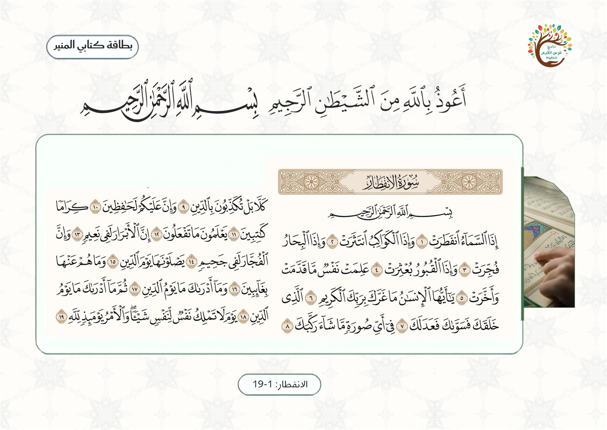

وحدة العائلة — اللقاء الثاني سبب نزول سورة الإنفطار
المرحلة: تمهيدي (5–6 سنوات) · المجلس: مجلس القرآن · اليوم: الإثنين
المدة: نصف ساعة
سؤال التركيز
ماذا يُخبرنا اللهُ في سورة الانفطار عن يوم القيامة، وكيف نستعدُّ له؟
بوصلةُ اللقاء: تفتح به المعلمةُ الحوار وتعود إليه عند الغلق. يقيسه سؤالُ التغذية الراجعة الأول ومؤشراتُ النجاح.
جوهر اللقاء
يبيّن الله لنا في سورة الإنفطار ما يحدث يوم القيامة، وأن كل شيء حولنا يتغيّر حاله في هذا اليوم العظيم، وفيها بيان حُسن عاقبة الأبرار وسوء عاقبة الفجّار؛ لذلك من الواجب علينا الاستعداد لهذا اليوم بطاعة الله والعمل الصالح.
تظهر موسّعةً في «المعنى المركزي» بسير اللقاء؛ لو لم يبقَ من الدرس إلا جملةٌ فهي هذه.
ورقة التدريس السريعة — خطوات اللقاء أثناء الدرس
① تهيئة وبداية اللقاء ٩ د
التاريخ الهجري وسؤال اليوم وأنشودة الأيّام والطقس (أوّل لقاء اليوم).
إشارة بدء اللقاء: أبيات نونية القحطاني، ثم جواب الإشارة.
آداب لقاء القرآن، ثم بطاقة «اعتقادنا في القرآن».
مراجعة سريعة: علوم سورة الإنفطار (الاسم · العدد · التنزيل).
② بناء وسير اللقاء ١٣ د
القرآن نورٌ وبرهان، وهو ٣٠ جزءًا ونتعلّم جزء عمّ.
الاستماع إلى السورة، ثم سبب نزولها ومقاصدها: يوم القيامة · البعث · عاقبة الأبرار والفجّار.
المعنى المركزي: نستعدّ ليوم القيامة بالعمل الصالح ( لا تهويل الأهوال).
ربط الأسرة: يستمع الطفل مع أسرته إلى سورة الإنفطار، ويذكر لهم عملًا صالحًا يستعدّ به ليوم القيامة.
ورقةٌ مرجعية سريعة أثناء الدرس — الخطوات فقط دون الأهداف والزيادات؛ والنصّ الكامل في تبويب «دليل الدرس كامل».
تهيئة بداية اليوم
تُنفَّذ تهيئة بداية اليوم في أوّل لقاء من اليوم فقط — وهو لقاء «كتابي المنير» — ثم تنتقل المعلمة في بقيّة اللقاءات مباشرةً إلى إشارة بدء اللقاء.
التوقيت الهجري لتهيئة اليوم
جارٍ حساب التاريخ الهجري…
تاريخ اليوم الهجري بحسب تقويم المتصفح.
تسأل المعلمة: ما تاريخنا الهجري اليوم؟ ثم تذكر اليوم والشهر والسنة، وتربطه ببداية حلقة كتابي المنير.
سؤال اليوم: أيّ يوم هذا؟ تُنشد المعلمة مع الأطفال أنشودة أيّام الأسبوع كاملة، ثم تسأل: اليوم هو؟ — وأمس كان؟ — وغدًا سيكون بإذن الله يوم؟
أنشودة الطقس بالحركات: تُشغّل المعلمة الأنشودة ويشارك الأطفال بالإشارات والحركات المناسبة, ثم الربط بالتوحيد: من خلق الشمس؟ ومن يرسل المطر؟ ومن يدبّر الطقس؟ ثم تؤكّد: الله سبحانه وتعالى.
تقول المعلمة: نبدأ يومنا بذكر الله وشكره على نعمة القرآن الذي سنتعلّمه.
مسار بداية اللقاء
① تهيئة
إشارة بدء اللقاء — نونية القحطاني
السلام عليكم ورحمة الله وبركاته يا أحباب القرآن. نستمع الآن إلى إشارة بدء اللقاء لنعرف ماذا سيكون لقاؤنا.
منهجية الإشارة: تبدأ المعلمة بتحية الإسلام، ثم تدعو الأطفال للاستماع دون أن تُسمّي اللقاء؛ فيستمعون إلى أبيات نونية القحطاني ويتعرّفون على لقائهم بأنفسهم — فيرتبط كلّ لقاء بإشارته في أذهانهم — ثم تؤكّد المعلمة: «نعم، لقاؤنا الآن هو لقاء كتابي المنير، نتعلّم فيه القرآن»، فيتهيّؤون للجلوس والإنصات.
تستعين المعلمة بالفيديو لضبط نغمة الإشارة، مع بقاء الأبيات ظاهرة في البطاقة.
جواب الإشارة: «لقاؤنا كتابي المنير، نتعلم فيه القرآن».
آداب لقاء القرآن
أجلس بسكينة ووقاريجلس الأطفال على شكل حلقة علم وأمامهم لوحةُ الآيات المقرَّرة.
أستمع وأنصت لكلام اللهحسن الإنصات من أدب المجلس.
أستعيذ وأبسمل قبل القراءةقبل أن أبدأ القرآن.
أرتّل بصوت جميل واضحأقرأ القرآن ترتيلًا.
الاعتقاد — اعتقادنا في القرآن الكريم
أصلٌ ثابتٌ في جميع لقاءات كتابي المنير؛ تعرض المعلمة هذه البطاقة وتقرأها عليهم، ثم يردّدونها معها.
تعرض المعلمة هذه البطاقة في كل لقاء من لقاءات كتابي المنير وتقرأها عليهم.
صوتالتسجيل الصوتي لبطاقة: اعتقادنا في القرآن
مراجعة سريعة
علّمنا الله بالأمس أول سورة في جزء عمّ؛ تُراجع المعلمة معهم علوم السورة بأن يضع الطفل البطاقة المناسبة عند السؤال المناسب: ماذا سمّاها الله؟ سورة الإنفطار. كم عدد آياتها؟ ١٩ آية. ما تنزيلها؟ مكية نزلت على النبي ﷺ في مكة.
سير اللقاء
② سير وإغلاق
المرحلة الأولى — البناء: تُذكّر المعلمة الأطفال أن للقرآن أوصافًا، ومنها أنه برهان، قال تعالى: ﴿يَا أَيُّهَا النَّاسُ قَدْ جَاءَكُمْ بُرْهَانٌ مِنْ رَبِّكُمْ وَأَنْزَلْنَا إِلَيْكُمْ نُورًا مُبِينًا﴾ — أي بيّن الله فيه الحق ووضّحه ليهدينا إلى الصراط المستقيم والوصول إلى جنّات النعيم.
القرآن ثلاثون جزءًا: توضّح المعلمة أن القرآن مكوّن من ٣٠ جزءًا، ونحن نتعلّم الجزء الأخير وهو جزء عمّ (يبدأ بسورة النبأ وينتهي بسورة الناس).
الاستماع ثم سبب النزول: تُسمع المعلمة الأطفال السورة، ثم تخبرهم عن سبب نزول السورة ومقاصدها كما وردت في التحضير.
مقاصد السورة (للمعلمة): تصوير القيامة بتبعثر المخلوقات المنتظمة وتغيّر حالها ومسارها · إثبات البعث · بيان أهوال يوم القيامة · تنبيه الناس إلى وجوب الاستعداد له.
المعنى المركزي (الشرح المبسّط لصغارنا): يبيّن الله لنا في سورة الإنفطار ما يحدث يوم القيامة، وأن كل شيء حولنا يتغيّر حاله في هذا اليوم العظيم، وفيها بيان حُسن عاقبة الأبرار وسوء عاقبة الفجّار؛ لذلك من الواجب علينا الاستعداد لهذا اليوم بطاعة الله والعمل الصالح.
تصحيح فهم الطفل: ليس المقصود تخويف الطفل من يوم القيامة وتهويل أهواله؛ بل نُعرّفه بهذا اليوم العظيم لِيَستعدّ له بالعمل الصالح والطاعة، فرحمة الله واسعة، ومن استعدّ فاز بحُسن العاقبة. وسبب النزول ليس قصةً للتسلية؛ بل بيانٌ من الله نتعلّم منه الاستعداد للآخرة، فلا تتوسّع المعلمة في وصف الأهوال بما لا يناسب المرحلة.
المرحلة الثانية — التثبيت: تعرض المعلمة بطاقات المعاني: يوم القيامة · البعث · الاستعداد · الأبرار · الفجّار، ويعيد الأطفال سماع السورة، وتُكرّر المعلمة السماع قبل الانتقال إلى التغذية الراجعة.

لوحة السورة التي تعرضها المعلمة — تُربط معاني السورة بالاستماع إليها
▶تلاوة السورة — المصحف المعلّم بصوت الشيخ محمد صديق المنشاوي (يردّد خلفه الأطفال · السورة كاملة)
جملة اللقاء الختامية: «يعلّمنا الله في سورة الإنفطار عن يوم القيامة، فنستعدّ لهذا اليوم بطاعته مستعينين به».
وقفة تدبّر: نستعدّ ليوم القيامة (تُربط بالعمل الصالح لا بتهويل الأهوال)
«هذا القرآن العظيم اشتمل على أخبار الأولين والآخرين، والأمر بكل عدل وخير، والنهي عن كل ظلم وشر؛ فالناس في ظلمة إن لم يستضيئوا بأنواره». وفي سورة الإنفطار يخبرنا الله عن يوم القيامة لنستعدّ له بطاعته.
تنبيه منهجي: تلتزم المعلمة بالمعاني الواردة في التحضير، ولا تتوسّع في وصف أهوال القيامة أو تمثيلها بما لا يناسب المرحلة؛ بل تربط الخبر بالاستعداد بالعمل الصالح.
الوسائل والصور المعروضة في اللقاء
عُلومُ السُّورة
سُورةُ الإنفِطار
عددُ الآيات
١٩ آية
التنزيل
مكّيّة
الجزء
عَمَّ
أوّلُ آية
﴿إِذَا السَّمَاءُ انفَطَرَتْ﴾
آخِرُ آية
﴿وَالْأَمْرُ يَوْمَئِذٍ لِّلَّهِ﴾
محورُها: عظمةُ يوم القيامة · الكِرامُ الكاتبون · إحسانُ الله للإنسان
لوحة الآيات المقرَّرةتُعرَض كبيرةً ويجلس الأطفال حلقةً أمامها
لوحة سورة الإنفطارآيات ١–١٩ · تُوضع في المنتصف وتُوزّع بطاقات المعاني حولها
الأدواتلوح القرآن · بطاقة سورة الإنفطار · بطاقات: يوم القيامة · البعث · الاستعداد · الأبرار · الفجّار.
التهيئةتوضع بطاقة السورة في المنتصف، وتُوزّع بطاقات المعاني حولها.
خطوات التنفيذ
تستمع المجموعة إلى مقطع من السورة.
تعيد المعلمة الشرح المبسّط الوارد في التحضير.
يختار كل طفل بطاقة مرتبطة بما سمعه.
يضع البطاقة بجوار عنوان السورة.
تراجع المعلمة المعاني دون إضافة تفاصيل جديدة.
أسئلة أثناء النشاط (التغذية الراجعة)
ماذا يعلّمنا الله في سورة الإنفطار؟ (أهوال يوم القيامة)
لأيّ يوم نستعدّ؟ (يوم القيامة)
ماذا بيّنت السورة عن عاقبة الأبرار والفجّار؟
اختيارات المعلمة حسب حاجة الطفل
الخجول: يختار البطاقة بالإشارة.
السريع: يذكر معنى البطاقة بجملة قصيرة.
كثير الحركة: يثبّت البطاقات حول بطاقة السورة.
الجملة الختاميةاللهم أعنّا على طاعتك والاستعداد ليوم القيامة.
اختيارات الأنشطة الإضافية
تلبية الاحتياجات الفرديةالبطيء: إعادة سماع المقطع وتكرار المعنى بلطف. الخجول: «جزاك الله خيرًا» عند أول اختيار بالإشارة. النشيط: يثبّت بطاقات المعاني حول بطاقة السورة.
الربط بالمواد الأخرىعلّمني ربي: الإيمان بالبعث ويوم القيامة. أدب واقتداء: العمل الصالح مع الأهل. لساني: التعبير عن معاني البطاقات بجملة واضحة.
التوسيع والإثراءبيتي: يذكر لأسرته عملًا صالحًا يستعدّ به ليوم القيامة، ويستمع معهم إلى السورة. فني: تلوين بطاقة معنى من السورة (بلا صور ذوات أرواح).
اقتراحات للتكرار مراجعة بطاقات المعاني (يوم القيامة · الاستعداد · العمل الصالح) ٣ دقائق في مطلع اللقاء التالي.
كفارة المجلس · خاتمة اللقاء
سبحانك اللهم وبحمدك، أشهد أن لا إله إلا أنت، أستغفرك وأتوب إليك.
العلاقة التكاملية لهذا اللقاء
الفكرة الناظمة لليوم: تعينني عائلتي على العمل الصالح والاستعداد للآخرة.
سؤال اليوم: ما العمل الصالح الذي يمكن أن أفعله مع عائلتي؟
هذا اللقاء: كتابي المنير — سبب نزول سورة الإنفطار.
كيف يتكامل هذا اللقاء مع بقية دروس اليوم والوحدة؟
التعليمُ التكامليّ = يعيشُ الطفلُ المعنى الواحد في كلّ حصص يومه؛ فلا يكون درسُ «سبب نزول سورة الانفطار» جزيرةً منعزلة، بل خيطًا يربط القرآنَ بالعائلة والعددِ والأدب في تجربةٍ واحدة. وهذه جسورُ الربط العمليّة:
علّمني ربي — آداب التعامل داخل العائلة
سببُ نزول السورة يوقظُ في الطفل الاستعدادَ للقاء الله؛ فيترجمُه سلوكًا حسنًا مع أهله كالرفق والمساعدة. حركةُ المعلمة: «مَن يستعدُّ للآخرة يُحسنُ إلى أهله اليوم… ما العملُ الذي ستفعله لعائلتك؟».
مهاراتي — العدّ والترتيب
عدُّ الأعمال الصالحة التي يقدّمها الطفلُ لعائلته وترتيبُها يربطُ النظامَ العدديَّ بالاستعداد المنظّم للآخرة. حركةُ المعلمة: «كم عملًا صالحًا نقدر أن نفعله لأهلنا اليوم؟ عُدّوها معي».
أدب واقتداء — الأذكار والطاعة
الاستعدادُ للآخرة يظهرُ في مداومة الطفل على الأذكار وأدبِه مع والديه في بيته. حركةُ المعلمة: «مَن يذكرُ اللهَ يستعدُّ للقائه… فلنبدأ بذكرٍ نقوله لأهلنا».
أحبك ربي — معرفة الله الرحيم
مَن أنزل القرآنَ وهدى إلى العمل الصالح؟ اللهُ الرحيمُ؛ فمعرفةُ الطفل بربّه تدفعه إلى الطاعة شكرًا. حركةُ المعلمة: «ربُّنا الذي يحبُّ العملَ الصالح… كيف نُفرحه اليوم؟».
الأركان التطبيقية
يجسّدُ الطفلُ في الأركان أعمالًا صالحة صغيرة يقدّمها لزملائه، تدريبًا عمليًّا على برّ عائلته والإحسان إليها. حركةُ المعلمة: ربطُ نشاط الركن بعبارة اليوم: «تعينني عائلتي على العمل الصالح».
فكرة للربط السريع
اسألي: كيف يخدم هذا اللقاء معنى اليوم؟ يربط الطفل الاستعداد ليوم القيامة بالطاعة والعمل الصالح؛ فيختار عملًا صالحًا يقدّمه لأسرته — كبرّ الوالدين أو الرفق بإخوته — مستعينًا بالله.
التقويم في منهج غرس القيم ثلاثي المراحل — يرصد الطفل قبل الدرس وأثناءه وبعده.
التقويم القبلي
ماذا سمّاها الله؟ (سورة الإنفطار)
كم جعل الله عدد آياتها؟ (١٩)
ما تنزيلها؟ (مكية)
التقويم التكويني
سؤال الطفل عمّا يعلّمنا الله في سورة الإنفطار
ملاحظة اختياره البطاقة المناسبة لما سمعه
هل يذكر يوم القيامة ووجوب الاستعداد له؟
مدى إقباله على الاستماع إلى السورة
التقويم النهائي
يجيب عن: «ماذا يعلّمنا الله في سورة الإنفطار؟»
يذكر يوم القيامة، ويختار بطاقة الاستعداد
يذكر عملًا صالحًا يستعين بالله على فعله
المعيار: ربط السورة بيوم القيامة والاستعداد بالعمل الصالح
مؤشرات النجاح
المؤشر المعرفي
يتعرّف على سبب نزول السورة، ويذكر أنها تخبرنا عن يوم القيامة والاستعداد له.
المؤشر المهاري
يربط بطاقة سورة الإنفطار بالمعاني الواردة عنها (البعث · الأبرار · الفجّار).
المؤشر الوجداني
يستشعر عظمة يوم القيامة، ويُقبل على الاستعداد له بالعمل الصالح مستعينًا بالله.
المؤشر التطبيقي
يختار بطاقة المعنى المناسبة لما سمعه ويضعها حول عنوان السورة، ويذكر عملًا صالحًا.
الآداب الصفية لحظات تربوية ذهبية — تبدأ المعلمة كل فكرة بآية أو نص حديث، ولا يعلو صوتها على النص الشرعي. الحزم مع الهدوء دائمًا.
آداب المعلمة — مقدمة الرعاية
تبدأ بالبسملة والحمدلة والدعاء: «اللهم علّمنا ما ينفعنا وانفعنا بما علّمتنا».
تنطلق كل فكرة بآية أو نص حديث شريف.
الحزم مع الهدوء — فلا يعلو صوت المعلمة على النص الشرعي.
آداب الطفل مع القرآن
الجلوس بسكينة ووقار في حلقة العلم أمام لوحة الآيات.
الإنصات لكلام الله وعدم المقاطعة أثناء التلاوة.
الاستعاذة والبسملة قبل القراءة، وحسن التعامل مع المصحف.
١ · تعظيم كلام الله
الموقفوضع طفل بطاقة النشاط فوق صفحة المصحف المفتوح.
الرد المقترح«المصحف كلام الله نعظّمه ولا نضع فوقه شيئًا. نرفع بطاقتنا برفق، ونضع المصحف في مكانٍ عالٍ نظيف».
القيمةتعظيم القرآن — حسن التعامل مع المصحف.
ربط بالدرس: معاني السورة عن يوم القيامة مدخل لتعظيم خبر الله والاستعداد له، لا مسابقة معلومات.
٢ · حسن الاستماع والإنصات
الموقفتحدّث طفل مع زميله أثناء تلاوة السورة.
الرد المقترح«إذا سمعنا القرآن أنصتنا؛ قال الله: ﴿فَاسْتَمِعُوا لَهُ وَأَنْصِتُوا﴾. نستمع بقلوبنا لكلام ربّنا. جزاك الله خيرًا».
القيمةحسن الاستماع — الإنصات لكلام الله.
ربط بالدرس: نتعلّم السورة استماعًا من قارئ متقن.
٣ · الاستعاذة والبسملة قبل القراءة
الموقفبدأ طفل يردّد الآية دون استعاذة ولا بسملة.
الرد المقترح«قبل أن نقرأ القرآن نستعيذ بالله ونبسمل؛ فنبدأ باسم الله ونطلب حفظه. هيا نقولها معًا برفق».
القيمةأدب تلاوة القرآن — الاستعانة بالله.
ربط بالدرس: من آداب لقاء القرآن التي رددناها في بدء اللقاء.
٤ · السكينة والوقار في الجلوس
الموقفتحرّك طفل كثيرًا وهو في حلقة القرآن.
الرد المقترح«في حلقة القرآن نجلس بسكينة ووقار احترامًا لكلام الله. اجلس هادئًا يا بطل، وستضع بطاقتك بعد قليل».
القيمةالسكينة — الوقار — احترام مجلس القرآن.
ربط بالدرس: أول آداب اللقاء «أجلس بسكينة ووقار».
٥ · الانتظار وضبط النفس في النشاط
الموقفأراد طفل أن يضع كل البطاقات قبل أن يأتي دوره.
الرد المقترح«انتظر دورك يا بطل، لكلٍّ منّا بطاقة يضعها عند عنوانها. حسن الانتظار من أدب المجلس. جزاك الله خيرًا».
القيمةضبط النفس — أدب الدور — احترام المجموعة.
ربط بالدرس: نشاط «ماذا تعلّمنا السورة؟» يتناوب فيه الأطفال على بطاقات المعاني.
القيمة تترسّخ حين تُعاش في البيت كما تُتعلَّم في الفصل — هذه التهيئات يُطبّقها ولي الأمر قبل الدرس وبعده.
١ · تهيئة وجدانية
أيُحدّث ولي الأمر طفله عن يوم القيامة يومًا عظيمًا أخبرنا الله به، ونستعدّ له بطاعته.
بيقول له قبل النوم: «اللهم أعنّا على طاعتك والاستعداد ليوم القيامة».
← يربط الطفل بين الدرس والاستعداد للآخرة بالعمل الصالح في حياته الفعلية.
٢ · تهيئة معرفية
أيذكّره أن سورة الإنفطار تخبرنا عمّا يحدث يوم القيامة، وأن الله يبيّن فيها عاقبة الأبرار والفجّار.
بيسأله بلطف: «لأيّ يومٍ نستعدّ؟ وكيف نستعدّ له؟»
← يرسّخ المعنى قبل سماعه في الصف.
٣ · تهيئة حسية سمعية
أيستمع الطفل مع أسرته إلى سورة الإنفطار من قارئ متقن.
بيلفت انتباهه بلطف إلى أن السورة تخبرنا عن يوم القيامة والاستعداد له، دون تهويل الأهوال.
← يعيش الطفل المعنى واقعيًا قبل عرضه في الصف.
٤ · تهيئة عملية بسيطة
أيتّفق مع الطفل على عملٍ صالح يقدّمه لأسرته اليوم (برّ الوالدين أو الرفق بإخوته).
بيساعده على أن يقول: «أستعدّ ليوم القيامة بطاعة الله والعمل الصالح».
← مشاركة الأسرة تعطي الطفل حافزًا للمشاركة أمام زملائه.
٥ · تهيئة سلوكية
أيشجّع طفله على حسن التعامل مع المصحف والإنصات عند سماع القرآن.
بيذكّره أن العمل الصالح استعدادٌ ليوم نلقى الله فيه.
← يصبح السلوك اليومي نفسه جزءًا من الدرس.
٦ · تهيئة تعاونية أسرية
تتعاون الأسرة على العمل الصالح والاستعداد للآخرة؛ فيختار الطفل عملًا صالحًا يقدّمه لأهله، ويستمعون معه إلى السورة، فيتعلّم أن العائلة تعينه على الطاعة والاستعداد ليوم القيامة.
← يزرع التعاون الأسري ومحبة العمل الصالح في وجدان الطفل.
أسئلة تطرحها على طفلك
ماذا يعلّمنا الله في سورة الإنفطار؟
لأيّ يومٍ نستعدّ؟
ماذا بيّنت السورة عن عاقبة الأبرار والفجّار؟
ما العمل الصالح الذي يمكن أن تفعله مع عائلتك؟
بمَ نستعدّ ليوم القيامة؟
نص رسالة جاهزة لولي الأمر (واتساب)
بسم الله الرحمن الرحيم السلام عليكم ورحمة الله وبركاته
تعلّم طفلكم الكريم اليوم في مادة «كتابي المنير» عن سبب نزول سورة الإنفطار: أنها تبيّن ما يحدث يوم القيامة، وحُسنَ عاقبة الأبرار وسوءَ عاقبة الفجّار، ووجوبَ الاستعداد لذلك اليوم بالعمل الصالح.
نشاط بيتي: اتّفقوا مع طفلكم على عملٍ صالح يقدّمه لأسرته اليوم، واستمعوا معه إلى سورة الإنفطار، وقولوا معًا: «اللهم أعنّا على طاعتك والاستعداد ليوم القيامة».
جزاكم الله خيرًا على شراككم في تربية أبنائكم — فريق نادي غرس القيم
القيم الأساسية للدرس
الإيمان بالبعث
التصديق بأن الله يبعث الخلق يوم القيامة، وهو من الغيب الذي أخبرنا الله به.
الاستعداد ليوم القيامة
الاستعداد لذلك اليوم العظيم بطاعة الله والإقبال على الخير.
العمل الصالح
فعل الخير مع الأهل والناس استعدادًا للقاء الله، مستعينًا به.
تعظيم خبر الله
إجلال ما أخبر الله به عن يوم القيامة وتلقّيه بالتصديق والقبول.
كيف تغرس المعلمة القيم أثناء الدرس؟
تربط خبر يوم القيامة بالاستعداد له بالعمل الصالح، لا بتهويل الأهوال.
تلتزم بالمعاني الواردة في التحضير ولا تتوسّع بما لا يناسب المرحلة.
تُثني على من يذكر عملًا صالحًا: «جزاك الله خيرًا، هذا استعدادٌ ليوم القيامة».
تُظهر تعظيمها لخبر الله: «صدق الله، فنستعدّ لهذا اليوم بطاعته».
المفاهيم الأساسية
سبب النزول
المناسبة التي نزلت فيها السورة، وما اشتملت عليه من مقاصد بيّنها الله.
يوم القيامة
اليوم الذي يبعث الله فيه الخلق وتتغيّر فيه أحوال المخلوقات.
الأركان مساحاتٌ غنيّة بأدوات التعلّم، مدّتها ٣٠ دقيقة، يستكشف فيها الأطفال الأدوات بحرّية ومرح — لا التزام بآداب مجالس العلم كالمواد الأساسية، مع بقاء المصحف والنصّ القرآني في موضع التلاوة والتعظيم. وتستقطع المعلمة وقتًا يسيرًا لتنفيذ نشاط تطبيقي سريع على الفكرة المركزية للدرس: سورة الإنفطار تخبرنا عن يوم القيامة والاستعداد له بالعمل الصالح. أمام المعلمة ركنان مقترحان تختار بينهما (أو تنفّذهما معًا) بحسب جاهزية البيئة.
ضابط منهجي: الإيمان بيوم القيامة من الغيب الذي أخبرنا الله به، فلا يُمثَّل ولا يُجسَّد؛ ولا تتوسّع المعلمة في وصف الأهوال، بل تربط الخبر بالاستعداد بالعمل الصالح، وتحافظ على آداب التعامل مع المصحف.
لوحة سورة الإنفطار المطبوعة، المصحف المعلّم في حامله، تسجيل التلاوة، بطاقة عنوان السورة، بطاقات المعاني (يوم القيامة · البعث · الاستعداد · الأبرار · الفجّار)، بطاقات الأعمال الصالحة، سلّة بطاقات، وجواز مرور الركن.
قوانين الركن
البقاء في مساحة الركن · آداب التعامل مع المصحف ولوحة السورة · الإنصات عند التلاوة · انتظار الدور · إعادة البطاقات إلى مكانها.
اللعب الحرّ في الركن
يستكشف الأطفال لوحة السورة وبطاقات معانيها ويستمعون للتلاوة بشوقٍ وهدوء، ويعبّرون عمّا سمعوه دون تلقين؛ ويبقى المصحف في موضع التعظيم يُتناول بأدب.
النشاط التطبيقي السريع
تستقطع المعلمة نحو ٥–٧ دقائق لتطبيق سريع على الفكرة المركزية للدرس: سورة الإنفطار تخبرنا عن يوم القيامة، فنستعدّ له بالعمل الصالح.
يستمع الطفل لمقطع من التلاوة ويتأمّل لوحة السورة.
يصنّف بطاقات المعاني حول عنوان السورة، ويختار عملًا صالحًا يستعدّ به (صلاة · صدقة · برّ الوالدين).
يختم بقول: «نستعدّ ليوم القيامة بطاعة الله والعمل الصالح».
هدف الركن
أن يربط الطفل السورة بيوم القيامة والاستعداد له بالعمل الصالح، ويصنّف بطاقات المعاني صحيحة.
دور المعلمة
تُتيح الاستكشاف والاستماع أولًا، ثم تستقطع وقتًا يسيرًا للنشاط التطبيقي وتربطه بالفكرة المركزية بجملة قصيرة، دون تلقين مباشر ولا توسّع في وصف الأهوال.
خصوصية عقدية وتربوية
الإيمان بيوم القيامة من الغيب الذي أخبرنا الله به، فلا يُمثَّل ولا يُجسَّد؛ ويُربط الخبر بالاستعداد بالعمل الصالح، ويبقى النصّ القرآني في موضع التلاوة والتعظيم، ونحافظ على آداب المصحف.
مناسب للفئة العمرية
خطوات قصيرة محسوسة تركّز على الاستعداد بالعمل الصالح، مع طفل أو مجموعة صغيرة في كل دورة.
المخرج
بطاقات معانٍ يصنّفها الطفل + بطاقة عمل صالح يختارها + جملة يردّدها عن الاستعداد ليوم القيامة.
نموذج تطبيقي للركن
لوحة السورة لتصنيف المعانييضع الطفل بطاقة المعنى حول عنوان السورة
الجملة الختامية: الحمد لله الذي أخبرنا عن يوم القيامة فنستعدّ له بطاعته.
أُدرك وأستمتع بمعاني سورتي
ركن أدرك وأستمتع
الأدوات والوسائل التعليمية
لوحة سورة الإنفطار المطبوعة، تسجيل المصحف المعلّم، بطاقات المعاني (يوم القيامة · البعث · الاستعداد · الأبرار · الفجّار)، بطاقات مطابقة وذاكرة، بطاقات أعمال صالحة، ووسادات إنصات هادئة.
قوانين الركن
البقاء في مساحة الركن · الإنصات وآداب الاستماع لكلام الله · آداب التعامل مع المصحف واللوحة · انتظار الدور · إعادة البطاقات إلى مكانها.
اللعب الحرّ في الركن
يستكشف الأطفال بطاقات المعاني وألعاب المطابقة والذاكرة بحرّية ومرح، ويستمعون للتلاوة ويتتبّعونها على اللوحة، ويعبّرون عمّا أدركوه دون تكليف، مع بقاء المصحف في موضع التعظيم.
النشاط التطبيقي السريع
تستقطع المعلمة نحو ٥–٧ دقائق لتطبيق سريع على الفكرة المركزية للدرس: سورة الإنفطار تخبرنا عن يوم القيامة، فنستعدّ له بالعمل الصالح.
يطابق الطفل بطاقة معنى بعنوان السورة عبر لعبة الذاكرة، ثم يستمع لمقطع من التلاوة متتبّعًا على اللوحة.
يختار بطاقة عمل صالح (صلاة · صدقة · طاعة) يستعدّ به ليوم القيامة.
يختم بقول: «نستعدّ ليوم القيامة بطاعة الله والعمل الصالح».
هدف الركن
أن يميّز الطفل معاني السورة عبر ألعاب إدراكية والاستماع، ويربطها بالاستعداد ليوم القيامة بالعمل الصالح.
دور المعلمة
تدير الألعاب وتضبط الصوت وتتيح الإدراك الحرّ، ثم تستقطع وقتًا يسيرًا للنشاط التطبيقي وتربطه بالفكرة المركزية، دون تلقين مباشر ولا توسّع في وصف الأهوال.
خصوصية عقدية وتربوية
اللعب الإدراكي والاستماع وسيلة لترسيخ الإيمان بيوم القيامة والاستعداد له لا للتسلية المجردة؛ فلا يُمثَّل الغيب ولا يُجسَّد، ويبقى النصّ القرآني في موضع التلاوة والتعظيم، ونحافظ على آداب المصحف.
مناسب للفئة العمرية
ألعاب إدراكية قصيرة ومطابقة محسوسة، مع مجموعة صغيرة حتى لا يزدحم الركن.
المخرج
بطاقات معانٍ يطابقها الطفل + بطاقة عمل صالح يختارها + جملة يردّدها عن الاستعداد ليوم القيامة.
نموذج تطبيقي للركن
لوحة السورة للإدراك والتتبّعيطابق ويصنّف بطاقات المعاني ويتتبّع التلاوة
الجملة الختامية: الحمد لله الذي أخبرني عن يوم القيامة وأعانني على الاستعداد له.
وحدة العائلة · كتابي المنير · اللقاء الثاني — سبب نزول سورة الإنفطار · نادي غرس القيم لضيافة الأطفال